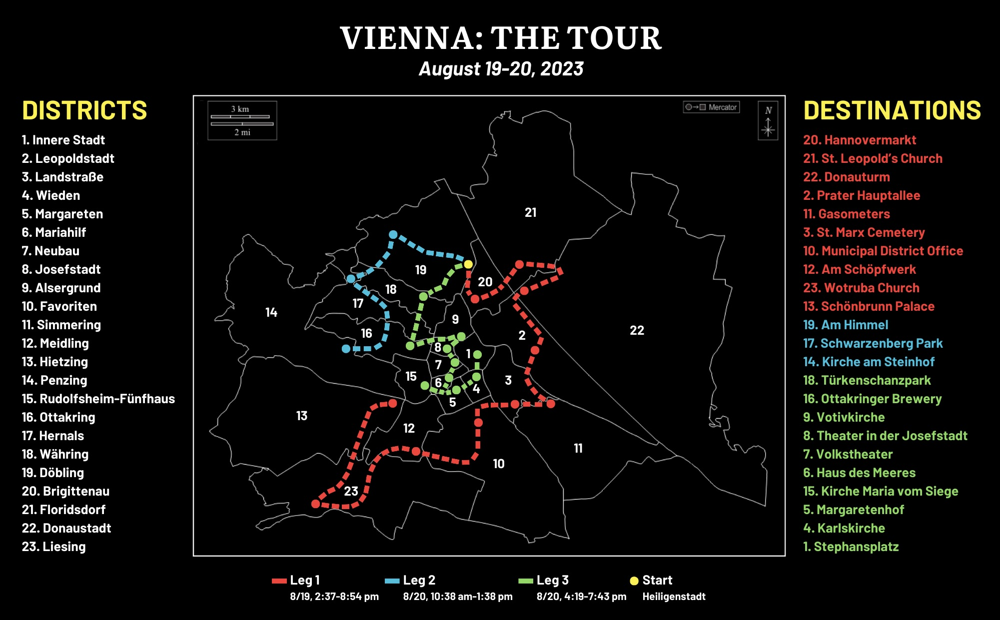
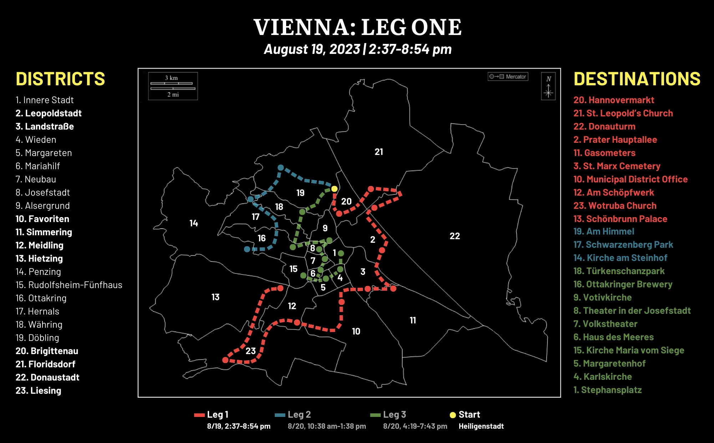
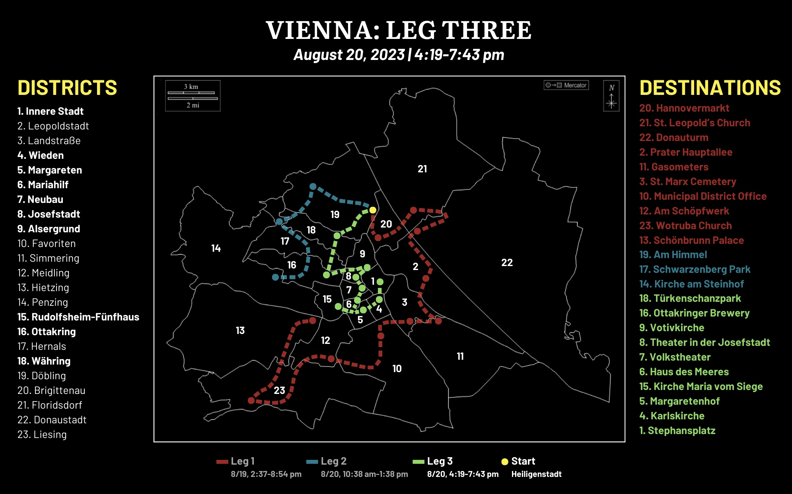
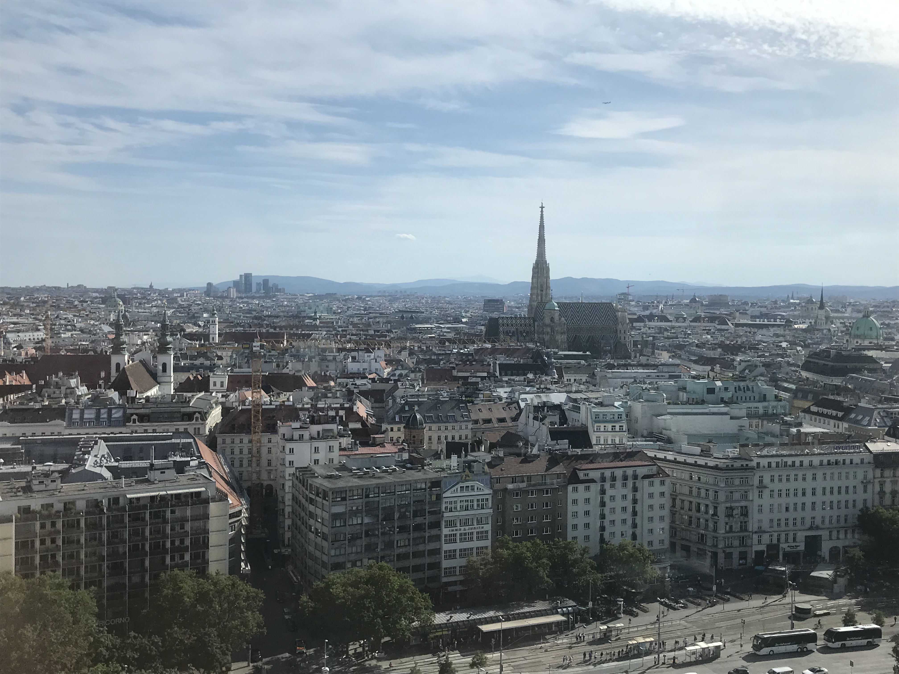

Good public transport is, undoubtedly, one of the greatest things since sliced bread.
Vienna, one of Europe's cultural capitals, is a city blessed with great public transport. With five metro lines, 29 tram lines, and 127 bus lines, its two million people can count on being able to get where they want to go. And it's not just from the outer areas into the inner district – you can get pretty much anywhere in an hour. Not bad for a city 160 square miles in size.
Over the course of a 12-week internship in the city, I had gotten to know the core of Vienna's public transport network quite well. Indeed, I had visited pretty much everything on the standard list: imperial residences like Schönbrunn Palace, the Belvedere, and the Hofburg; the Albertina art museum and the museums of the Museumsquartier; et cetera. I had hiked up the Leopoldsberg for the ultimate view of the city (seen above) and biked on the Donauinsel, an island in the middle of the Danube. But you could hardly say that I had seen all of Vienna.
Obviously, seeing all of the city was physically impossible. But it was possible to get close. And there was only one way to do that.
In 2019, for the first time in human history, someone ran a marathon distance in under two hours. It was October 12, and the Kenyan runner Eliud Kipchoge, owner of the marathon world record set in Berlin the year prior (2:01:39), proved that something once thought impossible was actually theoretically possible. Every aspect of the marathon attempt was tailored to maximize his chances of breaking the two-hour mark, from the weather to the elevation change to the number of spectators. And there was one location that met all of Kipchoge's criteria: Vienna.
Kipchoge ran his 26 miles and 385 yards in the Prater, a massive public park in Vienna's 2nd district. Obviously, due to the nature of the event, it wasn't world record-eligible. To this day, no one has run a marathon in under two hours. But it will be done. The only question is when.
Anyway, all of this is to say that the only similarities between Eliud Kipchoge and me are that we set out to do things that (to our knowledge) no one had ever done before, and in doing so, we visited the Prater. For Kipchoge, it was a historic testament to human endurance and potential. For me, it was attempting to visit all of Vienna's 23 districts in just over 12 hours across one weekend, at what can best be described as a brisk walking pace. This is the story of how I did it.
0. The lay of the land
I mainly planned my route on the Tuesday before my attempt, coinciding with a public holiday in Austria. I wanted to visit parts of the city I had never seen before, meaning I would avoid some places I had already been to over the previous weeks. This meant, for example, eschewing the Riesenrad (a giant ferris wheel) and the Belvedere for the interior of the Prater and the grave of one Wolfgang Amadeus Mozart, respectively. I did make a few exceptions: the 4th and 13th districts didn't really have viable options outside of the Karlskirche and the Schönbrunn, and ending my expedition at the Stephansplatz, the square marking the center of the city, just felt right.
But let's get to the geography, seen in the graphic above.1 The 1st district, the Innere Stadt or “Inner City,” is the historic heart of Vienna. The parliament building, opera house, and main museums are all here, along with a ton of other cool stuff. Until the 19th century, this was Vienna. This is where I would end my journey.
The 2nd through 9th districts all surround the 1st district in a clockwise direction, forming an inner ring. To the north, west, and south is a sort of half-ring comprising the 11th, 10th, 12th, 15th, 16th, 17th, 18th, 19th, and 20th districts. To the east of this, meanwhile, is the Danube, which accounts for that sort-of-diagonal line separating the rest of the city from the larger 21st and 22nd districts. Then, you also have three large districts in the west, two layers removed from the city center: the 13th, 14th, and 23rd. Some of these areas are hilly, forested, and almost rural, very much off the beaten path.
The circular layout makes for a lot of different possible routes for “completing Vienna,” so to speak. My home base, up north in the 19th district, was conveniently located right next to the Heiligenstadt U-Bahn and bus station. (The U-Bahn is the five-line metro system of Vienna.) I chose routes that neatly fit into my three travel blocks – Saturday afternoon and evening, midday Sunday, and Sunday evening. The main reason I didn't just do one huge block on Sunday is because it would be 93 degrees outside, tying for the hottest day all summer up to that point. An opportunity to refresh could go a long way. (Also, I had to pack for my flight back home the next day.)
I also wanted the runs to gradually get easier to navigate, so I saved most of the inner districts for the last leg. Similarly, this meant trying to hit as many of the outer districts on the first day as possible. Going clockwise seemed to be less time-consuming than counterclockwise, so that's what I opted for. Using Google Maps, I calculated travel times between my 23 stops and set my schedule.
For all 23 districts, the plan was to get to a landmark, walk around for a bit, and head to the next one. It seemed like a decent middle ground between going inside buildings and doing touristy things (which I didn't have time for with just two days) and actually speedrunning every district. I did briefly consider simply setting foot in every district as quickly as possible, but my primary objective was to legitimately see what each district had to offer. If I was going to spend over ten hours on foot, buses, and trains, as I had calculated, it would have to be worth it. Maybe another time.
On Friday, I talked to a couple of my coworkers about my weekend plans. They told me, despite living in the city for years, there were still some districts (ahem, Liesing) they hadn't been to. This was going to be a tour of Vienna that even Viennese would balk at. This was not the same thing as, say, visiting all five boroughs in New York City. This was, frankly, kind of ridiculous.
But on August 19 at 2:37 pm, I fully committed to the bit.
1. The first leg
Saturday, 2:37 pm. Mooslackengasse bus station, Döbling (19th district). 0/23.
It's a humid 86 degrees as I wait for the 5B opposite Heiligenstadt, which will take me the short trip over the Donaukanal into the 20th district. I could have claimed the 19th district automatically, but I'm planning to go up into the hills to count it tomorrow. This makes Brigittenau, the small and fairly residential district to the east, the clear first stop. The landmark I had chosen was the Hannovermarkt, a pretty big open-air marketplace selling a wide variety of produce. It's nowhere near the scale of the much more famous Naschmarkt, in the 6th district, but Brigittenau didn't exactly have a lot of options.
7 stops and a walk across the street later, I get to the market at 2:54.
After walking around for a bit, I hurriedly document my arrival and walk back towards Brigittaplatz. It turns out taking pictures of non-tourist attractions in the middle of a city is quite difficult to do subtly. But that's one district in the books, 22 to go. Unfortunately, not every district will take just 20 minutes to complete.
It's time to knock out the eastern districts, Floridsdorf (21) and Donaustadt (22). As I begin walking the two blocks up to the Jägerstraße U-Bahn station, I notice that the church on Brigittaplatz is actually kind of cool. I get a quick photo2 of the aptly named Brigittakirche, shrouded by the trees of the surrounding park.
But more exciting times are ahead, because not only am I about to enter eastern Vienna for the first time, I'm going to take the U6 metro line, which I have never been on.

You can see why. The other four lines go around or through the city center. The U6 is kind of just there, going through that western half-ring I mentioned earlier.
I have just 4 stops to wait through on the U6, but once I get on it is apparent that what happens on the U6 is as weird as the route it takes through the city. Or at least I think so when I notice the man near me cracking open an egg on the side of the car door. Regardless, the U6 takes me over the Danube and the Donauinsel, and I get off at its northern terminus at Floridsdorf, a station that shares its name with its district.
As I walk down Franklinstraße, I notice it's a lot quieter here. My destination is another Kirche: one of St. Leopold, patron saint of Austria. I arrive at the church on the Kinzerplatz at 3:22.
It's an imposing building, the third-tallest church in Vienna at over 300 feet. But there's no time to waste. I walk around the perimeter and position myself at the Hoßplatz for my first tram of the afternoon. After a few minutes, 5 stops on the 25 tram take me down to the Kagran U-Bahn station. I'm now in the 22nd district, Donaustadt. Two stops back towards the city center on the U1 and I'm at the Vienna International Centre (VIC), a huge complex of United Nations buildings. The connectivity between the buses, trams, and metro is seamless. That ends the first full hour of my trip, and I'm about 10 percent of the way done.
Saturday, 4:00 pm. Austria Center Vienna, Donaustadt (22nd district). 2/23.
Donaustadt is Vienna's biggest district by area, so it's a good thing for the rest of the run that I'm in its very northwestern corner and not somewhere in the hinterlands. A couple weeks ago, I visited a national park in this district. That's Donau-Auen National Park, one of the few protected natural areas in the world that lies within the limits of a major city. That was a half-day trip. This Donaustadt trip, however, will be under an hour.
I was originally going to count one of the buildings in the VIC as my destination here, but I'm a little bit lost and I realize I don't actually know what any of the buildings are. I have an idea in mind to change up the plan, though. I make my way past the convention center until I can see the Donauturm, an unmissable 827-foot tower that is the tallest structure in Austria. I get to my viewpoint at 4:02.
I'm sure the view from up there is nice, but the view of the Schönbrunn tonight will be even sweeter. It's time to jump back on the U1, so I get back to the Kaisermühlen VIC station and go three stops southwest to Praterstern, at the heart of Vienna's 2nd district, Leopoldstadt. From there, I take the U2, my third line of the afternoon, two stops southeast to Krieau, where I start walking towards the Prater.
My destination here is the Prater Hauptallee, and as it turns out, my route from the VIC to this long stretch of trail matches up pretty well with the first three miles of the Vienna City Marathon. In fact, maybe I should have just pretended to be running the marathon, since I arrive at my intersection with the Hauptallee at 4:38, 36 minutes after I checked off Donaustadt. That's four districts in two hours. 30-minute splits, not bad.

At this point in the day, the trees provide me with some welcome shade. It is very hot, and technically, I'm on an island.3 All that's missing is a beach, but I'm not going back to the Donauinsel, nor do I want to.4 Leopoldstadt is an interesting district, though. Not only do you have this massive former hunting ground, but there's a huge amusement park to the northwest (where you pay for all the rides individually?), the national stadium to the southeast, and a mix of newer developments and historic Jewish neighborhoods. Also, the People's Republic of Kugelmugel.5
I get off the Hauptallee at Stadionbad station, then get on the 77A bus and go four stops to the phlegmatic-sounding Schlachthausgasse U-Bahn station in Landstraße, Vienna's 3rd district. Instead of exploring Landstraße, though, I go further south, two stops on the U3 to Gasometer station. I'm in the 11th district, which on a day like today is aptly named Simmering.6 The clock, meanwhile, strikes 17.
Saturday, 5:00 pm. Gasometer U-Bahn station, Simmering (11th district). 4/23.
I walk around the block and, at 5:05, see some of the weirdest buildings I have ever seen in my life.
These are the Gasometers. These four massive cylinders were built to supply Vienna with gas, but after their retirement, they were transformed into apartments and residential facilities. Simmering, on the whole, is a fairly industrial district. I would go inside, but I have the day's longest walk ahead of me, and the clock is ticking.
Looping around the Gasometers (this picture is from the eastern end of the complex), I turn my attention to the west, crossing back into the 3rd district, Landstraße, on foot. As I mentioned earlier, my chosen landmark here was not the Belvedere palaces (or the peculiar Hundertwasser apartments), since I had seen them already, but the grave of Vienna's metaphorical patron saint, the 18th-century classical composer Wolfgang Amadeus Mozart. There is a certain eerie feeling as I walk into St. Marx Cemetery, past the rows of graves and towards the center. At 5:37, I reach the site.
Hastily, I take a picture of the plaque, and walk through to the other side. Incidentally, the month before, I visited Mozart's childhood home in Salzburg, which is now a museum. So this was, in a way, tracing his entire life.
I end my walk through the south of Landstraße and get on the 18 tram at Wildgansplatz. Four stops later, I'm at Südtiroler Platz and Vienna's main train station, the Hauptbahnhof. I switch to the O tram (still no idea why some trams are lettered and others numbered). I'm in Favoriten, Vienna's 10th district and also its most populous. It is also home to probably the most underwhelming stop on the entire trip, the Favoriten Municipal District Office.
Saturday, 6:00 pm. Laxenburger Straße, Favoriten (10th district). 6/23.
I take the O tram two stops to Laxenburger Straße, and across the street, there it is. It's 6:09.
Well, at least it's a cloudless day.
This, though, is the beginning of the most strenuous part of the journey. The seven districts I've visited form a semicircle ringing the center of the city from the east. Now, I'm going west to Meidling and Liesing, two districts I have not yet visited at any point during my stay in Vienna. And as I learned, you could live in Vienna for a decade without having any reason to go to Liesing. It's just so far out of the way. But in two hours, I will be there.
I walk a little bit further down Laxenburger Straße and take the 11 tram from Quellenplatz, going 10 stops south and west to Otto-Probst-Platz. No longer do I have a good sense of where I am in the city. Only the plan in my Notes app is guiding me now.
The 16A bus stops 9 times on the way to Am Schöpfwerk, my destination in the 12th district of Meidling. Meidling really just seems like a part of the city where people live. Fittingly, Am Schöpfwerk is a large housing development with interesting architecture, built in the late 70s and planned by Viktor Hufnagl. Just before the hour ends, at 6:58, I make it to the church and apartment buildings. I'm a third of the way there.
Saturday, 7:00 pm. Am Schöpfwerk, Meidling (12th district). 8/23.
Five stops west from Am Schöpfwerk is the terminus of the 16A bus line, Hetzendorf. From there, I switch to yet another form of transportation, the S-Bahn, which is Vienna's suburban commuter rail network. That kind of gives you an idea of where I'm headed. I only take the S2 line one stop down to Atzgersdorf, where I'm already in the 23rd district, Liesing. Outside Atzgersdorf station, I wait an inordinate amount of time for the 60A bus. Buses here aren't too frequent on Saturday evenings, and I've arrived right after a departure. Finally, the 60A gets in, and I take it eight stops, basically as far west as I can go, to Kaserngasse. I'm in the very southwestern corner of Vienna, on the edge of the populated area of the city.
But I'm not done. I walk a little bit further up Maurer Lange Gasse, and I mean up – this is one of the highest-elevation parts of the city. I'm here to see what I guess is my fourth church of the evening but also probably the most fascinating. Almost exactly an hour after I checked off Am Schöpfwerk, I make it to what feels like the summit at 7:59.
This is the Wotruba Church, named after its designer Fritz Wotruba and built in an unusual Brutalist style. Here, you can see it bathed in the August evening light in all the quality of an outdated iPhone 7 camera. I can't get a good picture, but if I squint I can see the city center all the way from here. It feels so far away with how quiet it is here and how far I've traveled, and I have to remind myself that this is also Vienna. It's a place that makes all of the past five hours of travel worth it.
Saturday, 8:00 pm. Wotruba Church, Liesing (23rd district). 9/23.
The trouble with being in a very remote part of a city (which I didn't know was possible) at 8 pm is that you have to get back home and it's 8 pm. Luckily, my efforts are aided by the 60 tram, which runs from near here to my last stop. I walk back down Maurer Lange Gasse – a pretty cool street, I must admit – to the tram station of the same name. After waiting a while once again, I get on the tram and take it 14 stops to Schloß Schönbrunn station. Sure, I've been here before. But I would be remiss if I didn't end my day here.
It's 8:54. My phone's camera gives up in the nighttime. But you get the idea. I'm into double figures now! And the first leg is complete.
Saturday, 9:00 pm. Schönbrunn U-Bahn station, Hietzing (13th district). 10/23.
My “visit” to the Schönbrunn takes Hietzing, the 13th district, off my list. Hietzing is mostly woods, so I didn't have many options for attractions in the district. Ideally, I would've come here at a time other than 9 pm on a Saturday, but there wasn't really another place for it on my itinerary. I get on the U4 at Schönbrunn station, which takes me directly back to Heiligenstadt, albeit with 14 stops, and also completes the U-set for me. That is, riding all five U-Bahn lines in Vienna, which I've done in six hours.
And that's just the first leg. I check my walking distance. Somehow, in the midst of all those buses and trams and trains, I did nine miles of work. And tomorrow will still bring a full day of travel and 13 more districts. At this point, presumably, both you and I wish there were fewer districts in this city. Nevertheless, on to the second!
2. The second leg

Sunday, 10:38 am. Heiligenstadt bus station, Döbling (19th district). 10/23.
I truly got up bright and early for this one. Instead of walking one minute east of my apartment to get on a bus, I walk one minute west of my apartment to get on a bus. If you look at the map, it takes me exactly three hours to visit just three districts on this leg. That's because it's about to get very hilly.
The 38A bus winds its way upwards through the 19th district of Döbling, my home base, 13 stops to Cobenzl Parkplatz. The air is somehow palpably fresher up here. I walk up Höhenstraße to Am Himmel, which is essentially a large green space. It's 11:09.
It's a beautiful day in the hills. Döbling is the district of vineyards and summits. The nearly 1,400-foot-tall Leopoldsberg, which I mentioned earlier, is in this district.
I find myself in the center of a circle. Around me, the trees speak German. What has really happened is I'm at an environmental audio display called the Lebensbaumkreis, or the “Tree of Life Circle.” This is not my destination, but you can see the skyline from here, which is kind of cool.
I'm trying to find the Sisi Chapel, my intended destination, but I'm a little bit lost. After wandering around for a while, I decide to retroactively switch my destination to Am Himmel and begin walking in the direction of my next stop. I'm in the woods.

When I finally make it out of the woods, I walk down to Sievering bus station. It's Sunday, so it's very quiet, everything's closed, and the buses are less frequent. I get on the 39A bus and take it a couple stops to Neustift, Agnesgasse station. I would've liked to go further, but it turns out this is the weekend of the Neustifter Kirtag, an annual street festival. Rathstraße and Hameaustraße are draped in food stalls and shops. I don't know it yet, but this is the start of a 5K up and down the hills of northwestern Vienna.
Sunday, 12:00 pm. Hameaustraße, Döbling (19th district). 11/23.
I walk up the Hameaustraße, resisting the urge to purchase lángos from one of the four (!) lángos vendors.7 It takes me back to Höhenstraße, and cars whizz by as I cross into the 17th district, Hernals, on foot. I enter Schwarzenberg Park, which as it turns out is not a park so much as a hilly blanket of green grass surrounded by trees. It's already 12:15. But that's 12 out of 23 districts: I'm halfway done!
For a few minutes I feel like I have this massive expanse of land all to myself. As it turns out, there are a few people out in the “park” on this unreasonably warm day.
The trail seems endless, but at long last I make it back to Höhenstraße. My hike up to the park is then immediately erased by a trek down Neuwaldegger Straße. This second leg is taking a lot longer than I would've liked. I get on the 43 tram at its northern terminus, Neuwaldegg station, and head four stops to Hernals station.
Sunday, 1:00 pm. Hernals S-Bahn station, Hernals (17th district). 12/23.
I'm now in the heart of Hernals district. Once again, I have to take commuter rail, with the S45 getting me to Ottakring station in one stop. I'm in the 16th district. I then have to wait for the 48A bus, which I eventually take seven stops west to Klinik Penzing station. I've made it to the hospital.
Penzing is Vienna's 14th district. Like Hietzing to the south, it's mainly woods in the west. I've been here once before, to see a Rapid Wien game at the Allianz Stadion, about a mile away. But the reason I'm at this hospital is to see the stunning Kirche am Steinhof, at the top of the hillside that forms the foundation of the Otto-Wagner-Spital. The church was built in the Art Nouveau style in the early 20th century, and like the rest of the complex, it was planned by Otto Wagner. Like the church I visited in Floridsdorf, it's dedicated to St. Leopold.
The hospital complex is fairly empty today. I'm not really sure how active it is these days. This area does kind of feel like the middle of nowhere. You can see in my route that I took a kind of roundabout way to get here, having to go into the city and then back out into the Viennese hinterlands. It's possible that I could've gotten here faster by walking through the hills, but also it is 90 degrees.
At 1:38, exactly three hours after I set out from Heiligenstadt, I complete the second leg by reaching the Kirche am Steinhof.
It's difficult to capture the scale of the church with my phone's camera. The tree in the way certainly doesn't help. If I look closely, though, there's a nice view of the city below.
Back down the hillside I go. I have a long way to go to get back to Heiligenstadt and refresh for the final stretch. I've already walked six miles today. I take the 48A bus back to Ottakring.
Sunday, 2:00 pm. Ottakring U-Bahn station, Ottakring (16th district). 13/23.
I get on the U3 at Ottakring and take it 11 stops to Landstraße, then switch to the U4 and get to Heiligenstadt six stops later. It's almost an hour since I left Otto-Wagner-Spital. Ten more districts to go. Will I make it?
3. The third leg
Sunday, 4:19 pm. Heiligenstadt bus station, Döbling (19th district). 13/23.
Well, according to my schedule, there's no suspense here. I'm going to be hitting all of the central districts on this leg, so instead of lengthy bus rides and hikes through the hills, it's going to be shorter walks and U-Bahn trips. To be done by sunset, I need to hit one new district about every 24 minutes. But I'm not quite done with the city's natural wonders: my next destination is Türkenschanzpark, an eloquently designed landscape in Währing, Vienna's 18th district. Währing is another suburban district with a good amount of greenery.
I take the 10A bus seven stops to Dänenstraße, at the northern end of the park. My plan is to walk through the park to the 10A's next stop, Türkenschanzplatz, before the next bus arrives. I instantly regret this, not because it impedes my plan, but because I wish I could've had more than seven minutes in the park, which I get to at 4:45. It's pretty nice.
Oh well. I get back on the 10A and take it seven more stops, out of Währing and through Hernals again, to Familienplatz in the 16th district, Ottakring. My mission is to see the Ottakringer Brewery. I don't drink beer, but even I can tell Ottakringer is kind of a big deal here. I also don't really know what else this district has in store, besides the general vibes of these western areas.
Sunday, 5:00 pm. Wattgasse, Ottakring (16th district). 14/23.
I get off at Familienplatz. There's another imposing church in my vicinity.
I walk down Ottakringer Straße, which I assume is the main street through the heart of the district, and get to the brewery at 5:12. Prost!
I'm basically at Johann Nepomuk Berger Platz, where I get on the 44 tram and pretty much go straight east into Alsergrund, the 9th district. It's a district of big names: Freud and Schubert most famously, but also Beethoven and Mozart. Apart from a quick detour into the 15th district, my work out west is done. I take the 44 seven stops to Landesgerichtsstraße, and at 5:45, I reach the Votivkirche, at the start of the historic Ringstraße, a road that encircles the Innere Stadt.
This is not a city that lacks architecture, I think to myself as I depart the neo-Gothic cathedral. I walk down behind the city hall and turn into the 8th district, Josefstadt. It's the smallest district in all of Vienna at under half a square mile.
Sunday, 6:00 pm. Josefstädter Straße, Josefstadt (8th district). 16/23.
A couple blocks on Josefstädter Straße leads me to the Theater in der Josefstadt, which I reach at 6:03.
This is not a city that lacks culture, I remark to myself as I leave the 18th-century theater. I go down Strozzigasse and Neubaugasse, then turn left on Neustiftgasse. I'm in Neubau, the 7th district. Like Josefstadt, it's small, but packed. It's home to the Museumsquartier, but I'm here to check out the Volkstheater, which I reach just 11 minutes later at 6:14. Two theaters in a row!
No clue what the image is about. Because I can, I take the U3 just one stop from Volkstheater to Neubaugasse. Boom, I'm in Mariahilf, the 6th district. I take a quick walk around the Haus des Meeres, the city aquarium. Most people would go inside the aquarium, but I don't have time. It's 6:28.
But of course, no visit to Mariahilf is complete without a walk down Vienna's shopping street, Mariahilfer Straße. It helps that this is the way to my next destination.

I cross the Gürtel, the beltway that rings Vienna's inner districts. I'm now in the 15th district, Rudolfsheim-Fünfhaus, which I can't imagine I would have come to at any point for any reason other than this. On this side of the Gürtel is the Kirche Maria vom Siege, which I get to at 6:45.
Needless to say, I'm positively flying through the districts right now. I've hit five of them in the past hour alone. It's a far cry from midday, when it took me 83 minutes to get from Schwarzenberg Park to the Kirche am Steinhof. All of a sudden, I'm at 20 districts, and there's just three more to go. I'm so back.
Sunday, 7:00 pm. Gürtel, Mariahilf (6th district). 20/23.
I walk next to the Gürtel to get to Margaretengürtel station, where I make another one-stop U-Bahn journey, taking the U4 to Pilgramgasse. I walk down the street of the same name into the 5th district, Margareten, to see the Margaretenhof on Margaretenplatz. (Who is Margaret anyway?) It's 7:12 when I get there.
Margareten is another fairly urban, densely populated district. This just happens to be a building in Margareten.
I walk back to Pilgramgasse and take the U4 two more stops under the Gürtel to Karlsplatz. This is the home stretch. I enter Wieden, the 4th district and another small and urban one. I get to the Karlskirche at 7:27. As always, it looks majestic.
Built in 1737, this Baroque church is undoubtedly one of the great buildings in Vienna. It's my penultimate destination. I've done the districts east of the Danube and the Donaukanal. I've done the southern suburbs and hinterlands. I've walked up and down the hills out west. I've done the districts around the Gürtel.
There's only one thing left to do.
Triumphantly, I take the U1 up one stop from Karlsplatz to Stephansplatz. I'm ending my odyssey at the very center of the city, the square at the heart of the Innere Stadt, Vienna's 1st and most historic district. After 14 hours of travel spread out over two days, after 22 districts visited, it's time.
Welcome to St. Stephen's Cathedral.
Sunday, 7:43 pm. Stephansplatz, 1st district. 23/23.
Where better to mark the finish line than a church founded over 980 years ago? Maybe, in doing this, I've made history. I have no idea. But I know two things. One, I've made memories on this trip. I would even (cautiously) recommend it. Two, I'm tired and ready to go home. It's tortellini for dinner and British Airways in the morning. ∎
1. Vienna district map sourced from here. ↩
2. One thing that amused me as I was learning basic German in preparation for my time in Vienna was that in German, you “make” a photo (ein Foto machen) instead of taking it. Also, it seemed like the only differences between Austrian German and Standard German are the words for apricots and potatoes. Now that's something the owl won't teach you. ↩
3. Brigittenau and Leopoldstadt share a piece of land sandwiched between the Donaukanal and the Danube proper. ↩
4. No comment. ↩
5. Kugelmugel is a micronation contained within a spherical building in the Prater. ↩
6. Not that it isn't named Simmering on other days too. ↩
7. Lángos is a Hungarian deep-fried flatbread. The closest American food to it is probably frybread, associated mainly with the Navajo. ↩
And what a journey it was. As always, thanks for reading.
If you visit Vienna at some point in the future, hopefully this is useful in some way. Or maybe, regardless of where you'll be, you've been inspired to do something completionist on your next vacation. I never actually intended to turn this experience into an article, but it just worked out. I plan on doing something similar at some point in the next year. I can't say what it is yet – some people might be able to guess – but it should be a lot of fun.
What I can say the wait for the next production will not be nearly that long. Sports content is coming.
I'll leave you with some final stats (not including return trips):
- Districts reached: 23
- Travel time: 12h41m
- Trip breakdown: 10 buses, 7 trams, 8 U-Bahns, 2 S-Bahns
- Stops breakdown: 69 bus stops, 46 tram stops, 18 U-Bahn stops, 2 S-Bahn stops
- Miles walked: 21 (0.8 marathons)
- Umlauts used: 40
Also, thanks to World Data Lab, the company I was interning with, for the travel pass that made this trip possible.
